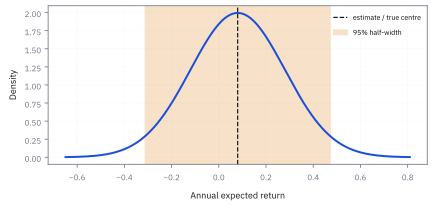
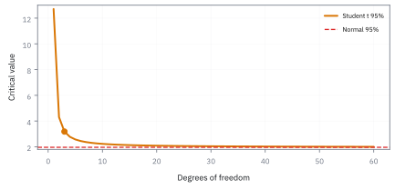

14.4 Put–Call Parity and the Volatility Smile
call ลบ put ที่ strike เดียวกันต้องเท่ากับ forward ที่คิดลดแล้วโดยไม่ต้องใช้แบบจำลอง แต่ความผันผวนที่ทำให้สูตรตรงกับราคาตลาดกลับไม่เท่ากันในแต่ละ strike
SPX อยู่ที่ 5,000 จุด option ยุโรปอายุ 6 เดือน strike 5,000 มี call ราคากลาง 300 จุด และ put 235 จุด ดอกเบี้ย 4% ต่อปี ดัชนีจ่ายปันผล 1.5% ต่อปี สัญญาละ \$100 ต่อจุด เพื่อนบอกว่า “strike เท่าราคาวันนี้ call กับ put ต้องราคาเท่ากัน ส่วนต่าง 65 จุด หรือ \$6,500 ต่อคู่ คือเงินฟรี” ถูกไหม
ลองตอบก่อนเปิดเฉลย
ไม่ถูก call ลบ put ต้องเท่ากับมูลค่าวันนี้ของ “ได้ดัชนี จ่าย strike” ในวันหมดอายุ คือ $5{,}000e^{-0.015(0.5)}-5{,}000e^{-0.04(0.5)}=4{,}962.64-4{,}900.99=61.65$ จุด ไม่ใช่ศูนย์ ส่วนเกินจริงมีแค่ 3.35 จุด หรือ \$335 ต่อคู่ ก่อนหักส่วนต่างราคาซื้อขายของสี่ขา และทั้งก้อนนี้เท่ากับการกู้เงินแพงกว่า 4% เพียง 13.7 bp เท่านั้น เกือบแน่นอนว่าไม่ใช่เงินฟรี
ภาพรวมก่อนลงสูตร
หน้านี้มีสองครึ่งที่ต่อกัน ครึ่งแรกคือ put–call parity: พอร์ต “call บวกเงินฝากที่โตเป็น strike” กับพอร์ต “put บวกดัชนีหนึ่งหน่วย” จ่ายเงินเท่ากันทุกกรณีในวันหมดอายุ ดังรูปด้านล่าง ราคาวันนี้จึงต้องเท่ากัน ข้อสรุปนี้ไม่ต้องใช้แบบจำลองหรือความผันผวนเลย เราจะใช้มันตรวจราคาบนจอ สร้างรายการที่ล็อกส่วนต่าง และดูว่าต้นทุนจริงกินส่วนต่างหมดอย่างไร
ครึ่งหลังเดินย้อน สูตร Black–Scholes: ใส่ราคาตลาดแล้วแก้หาความผันผวน ได้ implied volatility parity บังคับให้ call กับ put ที่ strike เดียวกันมีค่าเดียวกัน แต่ไม่ได้บังคับข้าม strike เมื่อวาดทุก strike จึงได้เส้นโค้งที่เรียกว่า smile แล้วเราจะดูว่าทำไมดัชนีหุ้นเอียงแบบนั้น และอ่านโอกาสที่ตลาดคิดไว้ออกจากราคาชุดนั้นโดยตรง
รูป — สองพอร์ตที่จ่ายเท่ากันทุกกรณี
ศัพท์ที่ใช้ในหัวข้อนี้
- Put–call parity
- สมการที่ผูก call, put, ดัชนี และเงินฝาก ที่ strike และวันหมดอายุเดียวกัน จริงเพราะสองฝั่งจ่ายเงินเท่ากันทุกกรณีในวันหมดอายุ จึงใช้ตรวจราคาได้โดยไม่ต้องเชื่อแบบจำลองใด
- Prepaid forward
- จ่ายเงินวันนี้เพื่อรับดัชนีหนึ่งหน่วยในวันหมดอายุ ถ้าดัชนีจ่ายปันผล ต้นทุนคือ $S_0e^{-qT}$ ถูกกว่าราคาวันนี้ เพราะซื้อน้อยกว่าหนึ่งหน่วยแล้วเอาปันผลซื้อเพิ่มจนครบ
- Conversion และ reversal
- conversion คือขาย call ซื้อ put และซื้อดัชนีพร้อมกัน ใช้เมื่อ call ลบ put แพงเกิน reversal คือทิศตรงข้าม ต้องสั่งทุกขาพร้อมกัน จึงมีชื่อเรียกทั้งชุด
- Implied volatility
- ค่าความผันผวนที่ใส่ในสูตร Black–Scholes แล้วได้ราคาตลาดพอดี ใช้แปลงราคาของทุก strike และทุกอายุให้อยู่บนสเกลเดียว มันเป็นราคาในหน่วยความผันผวน ไม่ใช่การพยากรณ์
- Smile และ skew
- รูปของ implied volatility เทียบ strike ที่วันหมดอายุเดียวกัน ถ้า Black–Scholes ถูกทุกข้อเส้นนี้ต้องแบนและไม่ขยับตามเวลา smile หมายถึงปีกสูงกว่ากลาง skew หมายถึงเอียง ดัชนีหุ้นเอียงชัด: put ที่ strike ต่ำแพงกว่า
- Put spread, butterfly และ digital
- put spread คือซื้อ put strike หนึ่ง ขายอีก strike หนึ่ง ราคามันบอกโอกาสที่ดัชนีจบต่ำกว่าช่วงนั้น butterfly คือสาม strike ห่างเท่ากัน ราคามันบอก density ส่วน digital จ่ายเงินก้อนคงที่ถ้าดัชนีจบเหนือ strike ทั้งสามใช้อ่านสิ่งที่ตลาดคิดไว้โดยไม่ต้องใช้แบบจำลอง
สัญลักษณ์และหน่วย
| สัญลักษณ์ | ความหมาย | หน่วย |
|---|---|---|
| $S_0,\ S_T$ | ระดับดัชนีวันนี้ และวันหมดอายุ | จุด |
| $K,\ T$ | strike และอายุ ต้องตรงกันทั้ง call และ put | จุด, ปี |
| $r,\ q$ | ดอกเบี้ยต่อเนื่อง และ dividend yield ต่อเนื่อง | ต่อปี |
| $A,\ B$ | prepaid forward $S_0e^{-qT}$ และเงินฝาก $Ke^{-rT}$ | จุด |
| $F$ | forward $S_0e^{(r-q)T}$ | จุด |
| $C,\ P,\ \varepsilon$ | ราคา call, put และส่วนที่ผิด parity | จุด |
| $m$ | ตัวคูณสัญญา | ดอลลาร์ต่อจุด |
| $\sigma_{\rm imp},\ \sigma(K)$ | implied volatility และ implied volatility เป็น function ของ strike | ต่อรากที่สองของปี |
| $\mathbb Q,\ f^{\mathbb Q}$ | น้ำหนักตั้งราคาแบบ risk-neutral และ density ของ $S_T$ ภายใต้มัน | ไม่มีหน่วย, ต่อจุด |
ขั้นที่ 1 — ลองด้วยมือ: call ลบ put จ่ายเท่าไรในวันหมดอายุ
โจทย์ให้อะไรมาบ้าง: ถือ call strike 5,000 หนึ่งใบ และขาย put strike 5,000 หนึ่งใบ อายุเดียวกัน ไล่ดูว่าวันหมดอายุได้เท่าไร ถ้าดัชนีจบที่ 5,600 และที่ 4,400
คำตอบ: ทั้งสองกรณีได้ $S_T-K$ พอดี เหตุผลทั่วไปมีสองกรณีเท่านั้น: ถ้าจบเหนือ strike, call จ่ายส่วนต่างและ put ไม่จ่าย ถ้าจบต่ำกว่า, call ไม่จ่ายและ put ที่ขายไว้ทำให้เราต้องจ่ายส่วนต่าง ซึ่งคือ $S_T-K$ ที่ติดลบ call ลบ put จึงคือ “ได้ดัชนี จ่าย strike” ทุกปลายทาง
ตรวจเองใน 10 วินาที: เราไม่ได้ใช้เลยว่าดัชนีเดินแบบไหน หรือมีความผันผวนเท่าไร ข้อสรุปนี้จึงจริงแม้ Black–Scholes จะผิด ตรงกลางที่ $S_T=5{,}000$ ทั้งสองใบเป็นศูนย์และ $S_T-K=0$ ก็ตรงอีก
รูป — call ลบ put คือ payoff ของ forward

ขั้นที่ 2 — จาก payoff ที่เท่ากัน สู่ราคาวันนี้ที่เท่ากัน
ถ้าสองพอร์ตจ่ายเท่ากันทุกกรณี ราคาวันนี้ต้องเท่ากัน ไม่อย่างนั้นซื้อตัวถูกขายตัวแพงแล้วเก็บส่วนต่างได้ฟรี call ลบ put จ่าย $S_T-K$ ตามที่เพิ่งไล่ด้วยมือ จึงต้องสร้าง “ได้ดัชนี” กับ “จ่าย strike” จากของที่ซื้อขายได้ แล้วตั้งราคาให้เท่ากัน
ลูกศรอ่านว่า “จ่ายเป็น … ในวันหมดอายุ” $A$ คือเงินที่ต้องใช้วันนี้เพื่อให้มีดัชนีหนึ่งหน่วยในวันหมดอายุ: ซื้อ $e^{-qT}$ หน่วย แล้วเอาปันผลที่ไหลเข้ามาซื้อเพิ่ม จำนวนหน่วยโตในอัตรา $q$ จนครบหนึ่งพอดี (ดู ต้นทุนการถือ) ส่วน $B$ คือเงินฝากที่โตเป็น $K$ พอดี ถือ $A$ และกู้ $B$ จึงได้ $S_T-K$ เหมือน call ลบ put ย้ายข้างสมการก็คือรูปสองพอร์ตด้านบน: $C+B=P+A$
บรรทัดสุดท้ายใช้ $A=e^{-rT}F$ ซึ่งเป็นรูปที่โต๊ะใช้จริง: call ลบ put คือระยะที่ forward อยู่เหนือ strike คิดลดมาวันนี้ เมื่อ $K=F$ พอดี call กับ put ราคาเท่ากัน ไม่ใช่เมื่อ $K=S_0$ แบบที่เพื่อนในโจทย์เปิดเรื่องคิด
ขั้นที่ 3 — ตรวจราคาบนจอ SPX
โจทย์ให้อะไรมาบ้าง: $S_0=5{,}000$, $K=5{,}000$, $T=0.5$, $r=0.04$, $q=0.015$, call 300 จุด และ put 235 จุด (ราคากลาง) ตัวคูณ $m=\$100$ ต่อจุด
คำตอบ: call ลบ put บนจอแพงกว่าที่ parity บังคับ 3.3531 จุด หรือ \$335.31 ต่อคู่สัญญา ไม่ใช่ 65 จุด ส่วนใหญ่ของ 65 จุดคือ 61.65 จุดที่ต้องมีอยู่แล้ว เพราะ forward 5,062.89 อยู่เหนือ strike เมื่อดอกเบี้ยสูงกว่าปันผล
ตรวจเองใน 10 วินาที: ดอกเบี้ยลบปันผลคือ 2.5% ต่อปี ครึ่งปีได้ราว 1.25% ของ 5,000 คือ 62.5 จุด ใกล้ 61.65 (ส่วนต่างเล็กมาจากการคิดลด) ถ้าลืมปันผลจะได้ $5{,}000-4{,}900.99=99.01$ จุด แล้วเห็นว่า call ลบ put ถูกไป 34 จุด ซึ่งผิดทิศทางเลย
ขั้นที่ 4 — รายการที่ล็อกส่วนต่าง และต้นทุนจริงที่กินมัน
โจทย์ให้อะไรมาบ้าง: ฝั่งที่แพงคือ call ลบ put จึงขาย call ซื้อ put ฝั่งที่ถูกคือ $A-B$ จึงซื้อ prepaid forward และกู้ $B$ (ชุดนี้ชื่อ conversion) จากนั้นสมมติราคาที่ซื้อขายได้จริงคือ call bid 299 และ put ask 236 ห่างราคากลางข้างละ 1 จุด และถามว่าดอกเบี้ยเงินกู้ต้องสูงแค่ไหนส่วนต่างจึงหายหมด
คำตอบ: เงินสดวันนี้บวก 3.3531 จุด และ payoff วันหมดอายุเป็นศูนย์ทุก $S_T$ (ขา call กับ put ให้ $-(S_T-K)$ ขา prepaid ให้ $S_T$ ขาเงินกู้ให้ $-K$) ส่วนที่ได้วันแรกจึงถูกล็อกไว้ แต่ข้ามราคากลางข้างละ 1 จุดแล้วเหลือ 1.35 จุด ยังไม่รวมต้นทุนของขาดัชนี และทั้งก้อน 3.35 จุดเท่ากับการกู้แพงกว่า 4% เพียง $4.1369\%-4\%=13.7$ bp ถ้าเรากู้ได้ที่ 4.25% ส่วนต่างที่ทำได้จริงกลายเป็นขาดทุน โต๊ะจึงอ่านตัวเลขนี้กลับด้าน: ราคา option บอกว่าตลาดใช้ดอกเบี้ย 4.1369% ในการตั้งราคา ไม่ใช่มีเงินฟรีวางอยู่
ตรวจเองใน 10 วินาที: ดอกเบี้ย 13.7 bp บนเงิน 4,900 จุดนานครึ่งปีคือราว $4{,}900(0.00137)(0.5)=3.36$ จุด เท่ากับส่วนต่างพอดี
รูป — เงินสดวันแรกของ conversion มาจากสี่ขา

ขั้นที่ 5 — สิ่งที่ parity บอกอีก: ขอบเขตของราคา และ option อเมริกัน
parity ให้ขอบเขตราคาที่ไม่ต้องใช้แบบจำลองด้วย เพราะ put มีค่าไม่ติดลบ call จึงต้องแพงกว่า $A-B$ และ payoff ของ call ไม่เกิน $S_T$ จึงไม่เกิน $A$ ฝั่ง put ก็เช่นกัน แล้วนำไปตอบคำถามว่า option ที่ใช้สิทธิ์ก่อนได้ (American) ควรใช้สิทธิ์ก่อนเมื่อไร
บรรทัดที่สี่คือผลที่น่าแปลกใจ: บนหุ้นที่ไม่จ่ายปันผล call อเมริกันมีค่ามากกว่าการใช้สิทธิ์ทันที ($S_0-K$) เสมอ เพราะ $Ke^{-rT}\lt K$ การใช้สิทธิ์ก่อนจึงเท่ากับทิ้งเงิน ไม่มีวันคุ้ม call อเมริกันกับ call ยุโรปบนหุ้นแบบนี้จึงราคาเท่ากัน put ไม่เป็นแบบนั้น ขอบล่าง $Ke^{-rT}-S_0$ ต่ำกว่าการใช้สิทธิ์ทันที $K-S_0$ ขอบเขตจึงไม่ห้ามการใช้สิทธิ์ก่อน และเมื่อหุ้นลึกใต้ strike มาก การรับ strike เร็วขึ้นเพื่อเอาดอกเบี้ยคุ้มกว่า ราคา put อเมริกันจึงต้องหาด้วย ต้นไม้ binomial
บรรทัดสุดท้ายคือ parity เมื่อหุ้นจ่ายปันผลเป็นก้อน: $D$ คือมูลค่าปัจจุบันของปันผลทุกก้อนก่อนวันหมดอายุ ผู้ถือหุ้นได้ปันผลนั้นแต่ผู้ถือ option ไม่ได้ จึงต้องหักออกจากฝั่งหุ้น ถ้าปันผลไหลต่อเนื่องอัตรา $q$ ได้ $S_0-D=S_0e^{-qT}$ กลับมาเป็นรูปเดิม (ดู ปันผลในสูตรราคา)
ขั้นที่ 6 — parity ไม่สนความผันผวน
ในสูตร Black–Scholes ความผันผวนอยู่แค่ใน $d_1$ และ $d_2$ เมื่อลบ put ออกจาก call พื้นที่สองฝั่งของระฆังรวมกันได้ 1 ความผันผวนจึงหายไปทั้งหมด ขั้นนี้ทำพีชคณิตแบบมีปันผล แล้วลองตัวเลขสามค่า
ความผันผวนจาก 10% เป็น 40% ทำให้ call แพงขึ้นกว่าสามเท่า แต่ผลต่างไม่ขยับเลย ความหมายคือ parity บอกได้แค่ว่า call กับ put ห่างกันเท่าไร บอกไม่ได้ว่าแต่ละตัวควรราคาเท่าไร ระดับราคาเป็นเรื่องของความผันผวน ซึ่งเป็นสิ่งเดียวที่ตลาดต้องต่อรองกัน
รูป — call กับ put ขยับตามความผันผวน ผลต่างคงที่

ขั้นที่ 7 — เดินย้อนสูตร: implied volatility และทำไม call กับ put ต้องได้ค่าเดียว
ราคาตลาดมีอยู่แล้ว สิ่งที่ไม่รู้คือความผันผวน เราจึงแก้สมการ $C_{\rm BS}(\sigma)=C_{\rm market}$ หา $\sigma$ ราคา call เพิ่มขึ้นตาม $\sigma$ เสมอ (vega เป็นบวก ดู the Greeks) และอยู่ระหว่าง $\max(A-B,0)$ กับ $A$ ราคาตลาดที่อยู่ในช่วงนี้จึงให้คำตอบค่าเดียวเสมอ วิธีที่เร็วคือ Newton: ใช้ vega เป็นความชันแล้วเดินไปหาจุดตัด เริ่มที่ 20%
บรรทัดแรกคือเส้นสัมผัสที่ $\sigma_n$ ตัดแกนที่ไหน ก้าวเดียวจาก 20% ก็ได้ราคา 300.0006 พลาดแค่ 0.0006 จุด เพราะราคาที่ strike ใกล้ forward เกือบเป็นเส้นตรงในความผันผวน ก้าวที่สองได้ 19.282099% ตรงทุกหลัก put 235 จุดแก้แบบเดียวกันได้ 19.0395% ต่ำกว่าของ call 0.2426 จุด ทั้งที่เป็น strike และอายุเดียวกัน
สามบรรทัดสุดท้ายอธิบายช่องว่างนี้ ถ้าราคาตลาดเป็นไปตาม parity แล้ว $C=P+A-B$ และสูตรที่ $\sigma_p$ ก็ให้ $C_{\rm BS}(\sigma_p)=P+A-B$ เหมือนกัน สองค่าที่ให้ราคา call เท่ากันต้องเป็นค่าเดียวกัน เพราะราคาเพิ่มตาม $\sigma$ อย่างเคร่งครัด ช่องว่าง 0.2426 จุดจึงคือส่วนต่าง 3.353 จุดของ parity ในอีกหน่วยหนึ่ง ถ้าใส่ดอกเบี้ย 4.1369% ที่ตลาดใช้ ทั้งสองจะได้ 19.1582% เท่ากัน โต๊ะจึงใช้กฎ “call กับ put ต้องมี implied volatility เท่ากัน” ตรวจว่าใส่ดอกเบี้ยกับปันผลถูกหรือไม่
ขั้นที่ 8 — วาดทุก strike: ความผันผวนไม่เท่ากัน
โจทย์ให้อะไรมาบ้าง: option อายุ 3 เดือนบนดัชนีที่อยู่ที่ 1,000 จุด ดอกเบี้ย 2% ไม่มีปันผล implied volatility ของห้า strike เป็นรูปร่างที่พบบ่อยในตลาดดัชนี (สมมติ ไม่ใช่ราคาของวันใดวันหนึ่ง): 800 → 28.5%, 900 → 23.1%, 1,000 → 19.8%, 1,100 → 18.2%, 1,200 → 18.9% ถามว่า put strike 800 แพงกว่าราคาที่ใช้ความผันผวนเดียว 19.8% กี่เท่า
คำตอบ: put strike 800 ราคา 2.9424 จุด แพงกว่าราคาแบบความผันผวนเดียว 9.2 เท่า ปีกซ้ายสูงกว่าจุดต่ำสุดที่ 1,100 ถึง 10.3 จุด ถ้า Black–Scholes ถูกทุกข้อ ห้าจุดนี้ต้องอยู่บนเส้นแบนเส้นเดียว และต้องไม่ขยับตามวัน การที่มันไม่อยู่คือหลักฐานว่าตลาดไม่เชื่อว่า log ราคาเป็น Normal หางบาง คนในวงการจึงเรียกการใช้สูตรแบบนี้ว่า “ใส่ตัวเลขผิดลงในสูตรผิด เพื่อให้ได้ราคาที่ถูก”
ตรวจเองใน 10 วินาที: parity ไม่ขัดกับรูปนี้ เพราะมันผูกเฉพาะ call กับ put ที่ strike เดียวกัน call strike 800 จึงต้องใช้ 28.5% เหมือน put strike 800 ส่วนข้าม strike ไม่มีอะไรบังคับให้เท่ากัน option หุ้นรายตัวที่ใช้สิทธิ์ก่อนได้ไม่เป็นแบบนี้: call กับ put ของมันมักให้ smile คนละเส้น เพราะ parity ของ option อเมริกันเป็นช่วง ไม่ใช่สมการ
รูป — smile ของ option ดัชนีอายุ 3 เดือน
ขั้นที่ 9 — ทำไมดัชนีหุ้นเอียงไปทางซ้าย
smile ของดัชนีสหรัฐฯ แทบแบนก่อนเดือนตุลาคม 1987 หลังวัน Black Monday ที่ดัชนีร่วงราว 20% ในวันเดียว put ที่ strike ต่ำก็แพงขึ้นอย่างถาวร คำอธิบายมีสองกลุ่ม กลุ่มแรกคือความกลัวความเสี่ยง: ราคาหุ้นกระโดดลงแรงและบ่อยกว่ากระโดดขึ้น เมื่อตลาดร่วงความผันผวนพุ่ง และนักลงทุนจำนวนมากซื้อ put ป้องกันพอร์ต อุปสงค์ของ strike ต่ำจึงสูง กลุ่มที่สองคือ leverage effect ซึ่งเขียนเป็นสมการได้ ให้ $V$ คือมูลค่าทั้งบริษัท $E$ คือมูลค่าหุ้น และ $D$ คือหนี้
บรรทัดที่สองแยกผลตอบแทนของทั้งบริษัทเป็นค่าเฉลี่ยถ่วงน้ำหนักของผลตอบแทนหุ้นกับหนี้ บรรทัดที่สามสมมติว่าหุ้นรับความเสียหายเกือบทั้งหมดและหนี้แทบไม่เสี่ยง หนี้จึงแทบไม่ขยับ สิ่งที่เหลือบอกว่าหุ้นแกว่งแรงกว่าบริษัท $V/E$ เท่า
สองบรรทัดสุดท้ายใช้ตัวเลขสมมติ: บริษัทผันผวน 15% คงที่ เมื่อมูลค่าบริษัทลดจาก 150 เป็น 120 (−20%) หุ้นลดจาก 100 เป็น 70 (−30%) และความผันผวนของหุ้นขึ้นจาก 22.5% เป็น 25.7% เอง ทั้งที่ไม่มีอะไรเปลี่ยนในธุรกิจ หุ้นยิ่งตก ยิ่งผันผวน ซึ่งคือสิ่งที่ smile เอียงซ้ายบอก ความคิดนี้มาจากการมองหุ้นเป็น call บนมูลค่าบริษัทที่มี strike เท่าหนี้ เพราะผู้ถือหนี้ได้เงินก่อน
รูป — หุ้นยิ่งตก ความผันผวนของหุ้นยิ่งสูง
ขั้นที่ 10 — ราคาข้าม strike บอกโอกาสที่ตลาดคิดไว้
smile ไม่ได้เป็นแค่รูป ราคาที่เรียงตาม strike บอกการกระจายตัวของ $S_T$ ภายใต้ $\mathbb Q$ ได้ตรง ๆ เขียนราคา call เป็น integral ของ payoff กับ density แล้วถามว่า ถ้าขยับ strike นิดหนึ่ง ราคาเปลี่ยนเท่าไร $K$ โผล่สองที่ คือขอบล่างและในตัวถูก integral จึงใช้กฎของ Leibniz ในตลาดจริง strike ห่างกันเป็นช่วง อนุพันธ์จึงกลายเป็นผลต่าง: put spread และ butterfly
พจน์จากขอบเป็นศูนย์ เพราะตัวถูก integral $(s-K)$ เป็นศูนย์ที่ $s=K$ พอดี เหลืออนุพันธ์ของ $s-K$ เทียบ $K$ คือ −1 ความชันของราคา call ตาม strike จึงคือโอกาสจบเหนือ strike ติดเครื่องหมายลบ บรรทัดของ put ได้จากการหาอนุพันธ์ของ parity $C-P=A-Ke^{-rT}$ เทียบ $K$
บรรทัดสุดท้ายคือราคา butterfly (ซื้อ call strike $K-h$ และ $K+h$ ขาย strike $K$ สองใบ) หารด้วย $h^2$ ได้ density จากราคาที่ซื้อขายได้ โดยไม่ต้องสมมติแบบจำลองใดเลย และเพราะโอกาสกับ density ห้ามติดลบ smile จึงชันเกินไปไม่ได้ (put spread จะติดลบ) และโค้งผิดรูปไม่ได้ (butterfly จะติดลบ) แต่ระวัง: ราคา European ข้ามทุก strike บอกได้แค่การกระจายตัวของ $S_T$ ที่วันเดียว ไม่ได้บอกว่าดัชนีเดินอย่างไรระหว่างทาง สัญญาที่ขึ้นกับเส้นทาง เช่น barrier option จึงตั้งราคาจาก smile อย่างเดียวไม่ได้
รูป — density ที่อ่านจาก smile เทียบโลกความผันผวนเดียว
ขั้นที่ 11 — อ่านโอกาสดัชนีร่วง และตั้งราคา digital ให้ถูก
โจทย์ให้อะไรมาบ้าง: ราคา put จาก smile: $P_{800}=2.9424$ และ $P_{900}=9.8942$ ถ้าใช้ค่าแบน 19.8% จะเป็น 0.3189 และ 6.2383 put spread หารด้วยระยะ strike คูณ $e^{rT}$ คือค่าเฉลี่ยของ $\mathbb Q(S_T\lt k)$ บนช่วง $800\le k\le900$ จากนั้นหาโอกาสที่ strike 800 พอดี ซึ่งต้องใช้กฎลูกโซ่ เพราะราคา put ขึ้นกับ $K$ สองทาง: ตรงผ่านสูตร และผ่านความผันผวน $\sigma(K)$ ที่เปลี่ยนตาม strike
คำตอบ: ราคาตลาดให้โอกาสจบต่ำกว่าระดับในช่วง 800–900 เฉลี่ย 6.99% เทียบ 5.95% ในโลกความผันผวนเดียว ที่ strike 800 พอดีได้ราว 3.1% เทียบ 1.21% ในโลกความผันผวนเดียว หางซ้ายของตลาดหนากว่าสองเท่าครึ่ง ความชัน −0.000638 ต่อจุดคือความชันของเส้น smile ที่ 800 ถ้าใช้ความชันของเส้นตรงระหว่าง 800 กับ 900 ($-0.054/100$) จะได้ 3.6% ตัวเลขนี้ไวต่อการวัดความชันมาก แต่ตัวเลข 6.30% ที่ได้จากการใส่ 28.5% ลงใน $\Phi(-d_2)$ ตรง ๆ ผิดแน่นอน เพราะมันคือโลกที่ความผันผวน 28.5% ทุก strike ซึ่งตลาดไม่ได้คิด
กฎลูกโซ่เดียวกันใช้ตั้งราคา digital call ซึ่งจ่าย \$1 เมื่อดัชนีจบเหนือ strike: ราคาคือ $-\partial C/\partial K=e^{-rT}\Phi(d_2)-\nu\,\partial\sigma/\partial K$ ตัวอย่าง: $r=q=0$, อายุ 1 ปี, strike เท่าดัชนี 100, ความผันผวนที่ strike นั้น 25% และ skew ลด 2.5 จุดต่อ strike ที่สูงขึ้น 10% ได้ $\Phi(-0.125)=0.4503$ บวก $100\phi(0.125)(0.0025)=39.58(0.0025)=0.0990$ รวม 0.549 หรือ 55% ของเงินที่จ่าย ถ้าไม่นับ skew จะได้ 45% ถูกไป 10 จุดเปอร์เซ็นต์
ตรวจเองใน 10 วินาที: 3.1% ต้องไม่เกินค่าเฉลี่ย 6.99% บนช่วง 800–900 เพราะโอกาสจบต่ำกว่าระดับหนึ่งเพิ่มขึ้นเมื่อระดับสูงขึ้น และต้องสูงกว่า 1.21% ของโลกแบนเพราะ smile เอียงซ้าย ทั้งสองข้อผ่าน ส่วน digital: skew ติดลบทำให้ call ที่ strike สูงขึ้นถูกลงเร็วกว่าโลกแบน ราคา digital ซึ่งคือความชันนั้นจึงสูงกว่า
ความผิดที่ให้ตัวเลขผิดโดยไม่มีอะไรเตือน
ลืมปันผลหรือการคิดลด: ใช้ $S_0-K=0$ จะเห็นเงินฟรี 65 จุด ใช้ $S_0-Ke^{-rT}=99.01$ จะเห็นว่าควรทำ reversal เพราะ call ลบ put ถูกไป 34 จุด ทั้งสองแบบผิด ตัวที่ถูกคือ 61.65 จุดและทิศเป็น conversion การใส่ปันผลผิดทำให้ทิศการเทรดกลับด้านได้
ใช้ parity แบบเท่ากันกับ option อเมริกัน: option หุ้นรายตัวในสหรัฐฯ ส่วนใหญ่ใช้สิทธิ์ก่อนได้ สำหรับหุ้นที่ไม่จ่ายปันผล parity กลายเป็นช่วง $S_0-K\le C-P\le S_0-Ke^{-rT}$ ส่วนต่างที่ดูเหมือนเงินฟรีอาจอยู่ในช่วงนี้พอดี
อ่าน $\Phi(-d_2)$ ที่ความผันผวนของ strike นั้นเป็นโอกาสของตลาด: ที่ strike 800 ได้ 6.30% แทนราว 3.1% เพราะไม่นับว่า smile เอียง digital ที่ตั้งราคาแบบเดียวกันก็ผิดไป 10 จุดเปอร์เซ็นต์ โอกาสของตลาดต้องอ่านจาก put spread หรือจากอนุพันธ์ของราคาเทียบ strike ทั้งก้อน
จับคู่ผิดสัญญา: call กับ put ต้องมี strike วันหมดอายุ และแบบการชำระเงินตรงกันเป๊ะ จับ call ที่หมดอายุเช้ากับ put ที่หมดอายุเย็นของดัชนีเดียวกัน ส่วนต่างที่ได้ไม่มีความหมาย
ใช้ทำอะไรบนโต๊ะจริง
ทุกเช้าโต๊ะรัน parity กับทุกคู่ call–put ก่อนอย่างอื่น ส่วนต่างที่ใหญ่ผิดปกติแทบทุกครั้งคือราคาค้าง ปันผลที่ใส่ผิด หรือดอกเบี้ยที่ไม่ตรงกับที่ตลาดใช้ ไม่ใช่เงินฟรี ในทางกลับกัน โต๊ะใช้ parity ดึง forward และ dividend yield ที่ตลาดใช้จริงออกมาจากราคา option เพราะแม่นกว่าการประมาณปันผลเอง
ราคาทุกตัวบนกระดานถูกแปลงเป็น implied volatility แล้ววาดเป็น smile ของแต่ละวันหมดอายุ ทุกโต๊ะ equity และ FX คำนวณ smile แบบนี้ และคำนวณ Greeks ด้วยสูตร Black–Scholes ที่ความผันผวนของแต่ละ strike ทั้งที่รู้ว่าแบบจำลองผิด เพราะมันเป็นภาษากลางของตลาด implied volatility ไม่ใช่ความผันผวนที่ตลาดคาดตรง ๆ มันรวมค่าประกันที่คนยอมจ่ายเพื่อป้องกันขาลงไว้ด้วย ความผันผวนที่เกิดจริงของดัชนีมักต่ำกว่า implied ส่วนต่างนี้คือสิ่งที่คนขาย option เก็บ (ดู variance swap) การวางทุกอายุเข้าด้วยกันได้ volatility surface และแบบจำลองที่สร้าง skew ขึ้นเองจาก correlation ติดลบระหว่างดัชนีกับความผันผวนคือ Heston
โจทย์ตรวจความเข้าใจ
1. ดัชนีที่ไม่จ่ายปันผลอยู่ที่ 1,000 จุด option ยุโรป strike 1,000 อายุ 6 เดือน ดอกเบี้ย 2% call 45 จุด put 32 จุด ราคาคู่นี้ผิด parity เท่าไร ทำรายการอะไร และ implied volatility ของสองตัวเป็นเท่าไร
เฉลย
$Ke^{-rT}=1{,}000e^{-0.01}=990.0498$ parity ต้องการ $1{,}000-990.0498=9.9502$ จุด แต่ตลาดให้ $45-32=13$ แพงไป 3.0498 จุด ทำ conversion: ขาย call +45 ซื้อ put −32 ซื้อดัชนี −1,000 กู้ +990.0498 ได้ +3.0498 จุดวันนี้ ตัวคูณ \$100 คือ \$304.98 ต่อชุด implied volatility ของ call คือ 14.20% และของ put 13.10% ช่องว่าง 1.10 จุดคืออาการเดียวกันในหน่วยความผันผวน
2. หุ้นที่ไม่จ่ายปันผลอยู่ที่ \$20 put ยุโรป strike \$36 อายุ 3 เดือน ดอกเบี้ย 2% ความผันผวน 24% ราคาเท่าไร เทียบกับการใช้สิทธิ์ทันทีที่ได้ \$16
เฉลย
หุ้นอยู่ลึกใต้ strike มาก $\Phi(-d_1)$ และ $\Phi(-d_2)$ เกือบเป็น 1 put จึงเกือบเท่า $Ke^{-rT}-S_0=35.8204-20=\$15.8204$ ซึ่งคือขอบล่างจาก parity ต่ำกว่า \$16 เพราะ put ยุโรปต้องรอสามเดือนกว่าจะได้ strike เงิน \$36 ที่ได้ช้ามีค่าแค่ \$35.82 วันนี้ นี่คือเหตุผลที่ put อเมริกันลึกมากถูกใช้สิทธิ์ก่อนกำหนด
3. ใน SPX ของโจทย์เปิดเรื่อง ถ้าเชื่อว่าดอกเบี้ย 4% ถูกต้อง dividend yield ที่ทำให้ parity ตรงกับราคากลาง 300 และ 235 พอดีคือเท่าไร
เฉลย
ต้องการ $A=65+B=65+4{,}900.9934=4{,}965.9934$ จึง $e^{-q(0.5)}=4{,}965.9934/5{,}000=0.9931987$ และ $q=-2\ln(0.9931987)=1.3649\%$ ต่ำกว่า 1.5% ที่ใส่ไว้ ตลาดตั้งราคาเหมือนปันผลน้อยกว่าที่เราคิด 0.135% ต่อปี นี่คือ implied dividend ที่โต๊ะดึงออกมาจากราคา option
คำนวณซ้ำด้วย JavaScript
เปิดดูโค้ด
// Put-call parity with dividends, the conversion trade, implied volatility, the leverage effect and reading the smile.
const { abs, exp, log, sqrt, max, PI } = Math;
const phi = x => exp(-0.5 * x * x) / sqrt(2 * PI);
function Phi(x) { // normal CDF: series near the centre, continued fraction in the tails
const a = abs(x);
if (a <= 3) { let t = a, s = a; for (let n = 1; n < 200 && t > 1e-17 * s; n++) { t *= a * a / (2 * n + 1); s += t; }
return x >= 0 ? 0.5 + phi(a) * s : 0.5 - phi(a) * s; }
let f = a; for (let k = 120; k >= 1; k--) f = a + k / f;
return x >= 0 ? 1 - phi(a) / f : phi(a) / f;
}
function bs(S, K, T, r, sigma, q = 0) {
if (!(S > 0 && K > 0 && T > 0 && sigma > 0 && sigma <= 5)) throw new RangeError('Need positive S, K, T and 0 < sigma <= 5');
const sT = sigma * sqrt(T), A = S * exp(-q * T), B = K * exp(-r * T);
const d1 = (log(A / B) + 0.5 * sigma * sigma * T) / sT, d2 = d1 - sT;
return { d1, d2, call: A * Phi(d1) - B * Phi(d2), put: B * Phi(-d2) - A * Phi(-d1), vega: A * phi(d1) * sqrt(T) };
}
function parity(S, K, T, r, q, call, put) { // prepaid forward A pays S_T, bond B pays K
const A = S * exp(-q * T), B = K * exp(-r * T);
return { A, B, F: S * exp((r - q) * T), fair: A - B, market: call - put, residual: call - put - (A - B),
impliedRate: -log((A - (call - put)) / K) / T, impliedDividend: -log((call - put + B) / S) / T };
}
function impliedVol(price, S, K, T, r, q = 0, kind = 'call') { // Newton on vega inside a bisection bracket
const A = S * exp(-q * T), B = K * exp(-r * T);
const low = kind === 'call' ? max(A - B, 0) : max(B - A, 0), high = kind === 'call' ? A : B;
if (!(price > low && price < high)) throw new RangeError(`No volatility gives this price: it must lie strictly between ${low} and ${high}`);
let lo = 1e-6, hi = 5, sigma = 0.2;
for (let i = 0; i < 100; i++) {
const b = bs(S, K, T, r, sigma, q), diff = (kind === 'call' ? b.call : b.put) - price;
if (abs(diff) < 1e-12 * price) return sigma;
if (diff > 0) hi = sigma; else lo = sigma;
const next = sigma - diff / b.vega;
sigma = next > lo && next < hi ? next : 0.5 * (lo + hi);
}
return sigma;
}
const S = 5000, K = 5000, T = 0.5, r = 0.04, q = 0.015;
const spx = parity(S, K, T, r, q, 300, 235);
const ivCall = impliedVol(300, S, K, T, r, q, 'call'), ivPut = impliedVol(235, S, K, T, r, q, 'put');
// The smile: five quotes and a quadratic in x = K/1000 - 1 fitted by least squares (coefficients below).
const smileK = [800, 900, 1000, 1100, 1200], smileIV = [0.285, 0.231, 0.198, 0.182, 0.189];
const sig = k => { const x = k / 1000 - 1; return 0.197143 - 0.241 * x + 0.992857 * x * x; };
const putAt = k => bs(1000, k, 0.25, 0.02, sig(k)).put, callAt = k => bs(1000, k, 0.25, 0.02, sig(k)).call;
const growth = exp(0.02 * 0.25), b800 = bs(1000, 800, 0.25, 0.02, 0.285);
const density = k => growth * (callAt(k - 1) - 2 * callAt(k) + callAt(k + 1));
console.log(JSON.stringify({
spx, usd: 100 * spx.residual, noDividend: S - spx.B, executable: 299 - 236 - spx.fair,
volSweep: [0.1, 0.2, 0.4].map(v => { const b = bs(S, K, T, r, v, q); return [v, b.call, b.put, b.call - b.put]; }),
ivCall, ivPut, ivGap: ivCall - ivPut, vegaGap: bs(S, K, T, r, ivCall, q).vega * (ivCall - ivPut),
atImpliedRate: [impliedVol(300, S, K, T, spx.impliedRate, q, 'call'), impliedVol(235, S, K, T, spx.impliedRate, q, 'put')],
smileFit: smileK.map((k, i) => [k, smileIV[i], sig(k)]),
put800: [bs(1000, 800, 0.25, 0.02, 0.285).put, bs(1000, 800, 0.25, 0.02, 0.198).put],
spreadMarket: growth * (bs(1000, 900, 0.25, 0.02, 0.231).put - bs(1000, 800, 0.25, 0.02, 0.285).put) / 100,
naive800: Phi(-b800.d2), vega800: b800.vega, market800: growth * (putAt(801) - putAt(799)) / 2,
density: [760, 1000, 1240].map(k => [k, density(k)]),
digital: Phi(-0.125) + 100 * phi(0.125) * 0.0025,
leverage: [100, 70, 50, 30].map(E => [E, 0.15 * (E + 50) / E]),
exercises: { index: parity(1000, 1000, 0.5, 0.02, 0, 45, 32),
indexIV: [impliedVol(45, 1000, 1000, 0.5, 0.02, 0, 'call'), impliedVol(32, 1000, 1000, 0.5, 0.02, 0, 'put')],
deepPut: bs(20, 36, 0.25, 0.02, 0.24).put, impliedDividend: spx.impliedDividend }
}, null, 1));สิ่งที่ควรตอบได้หลังอ่าน
- call บวกเงินฝากกับ put บวกดัชนีจ่าย $\max(S_T,K)$ เหมือนกัน จึงต้องราคาเท่ากัน: $C-P=S_0e^{-qT}-Ke^{-rT}=e^{-rT}(F-K)$ โดยไม่ต้องใช้แบบจำลองหรือความผันผวน
- SPX: parity ต้องการ 61.65 จุด ตลาดให้ 65 ส่วนต่างจริง 3.35 จุด (\$335) ไม่ใช่ 65 และเท่ากับดอกเบี้ยเงินกู้เพียง 13.7 bp
- parity ให้ขอบเขตราคา และบอกว่า call อเมริกันบนหุ้นไม่จ่ายปันผลไม่ควรใช้สิทธิ์ก่อน แต่ put อเมริกันอาจควร
- implied volatility หาได้ด้วย Newton บน vega และ parity บังคับให้ call กับ put ที่ strike เดียวกันมีค่าเดียว ข้าม strike ไม่มีอะไรบังคับ: put strike 800 แพงกว่าราคาความผันผวนเดียว 9.2 เท่า
- skew ของดัชนีมาจากความกลัวขาลงและ leverage effect $\sigma_E\approx(1+D/E)\sigma_V$ และอ่านเป็นโอกาสได้ด้วย $\partial P/\partial K=e^{-rT}\mathbb Q(S_T\lt K)$ และ $\partial^2C/\partial K^2=e^{-rT}f^{\mathbb Q}(K)$ ไม่ใช่จาก $\Phi(-d_2)$ ที่ความผันผวนของ strike นั้น
หน้านี้ดู smile ที่อายุเดียว หน้าถัดไป volatility surface และ term structure จะวางทุกอายุเข้าด้วยกัน และหากฎที่ทำให้แต่ละอายุไม่ขัดกันเอง